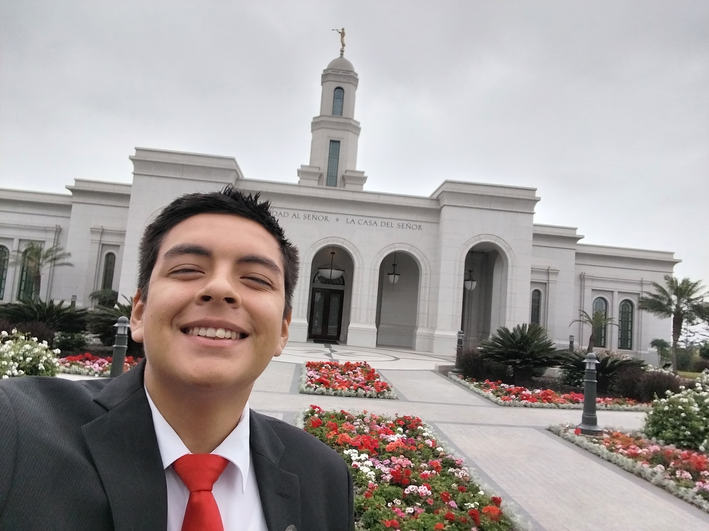

Alejandro Esteves | WDD 130
Hi! My name is Alejandro Esteves I'm from Lima, Peru. I like coding, hanging out with friends, listening to music, playing videogames, and sometimes cooking too. I am a student of BYU - Idaho and I'm studying Science in Software Development. I served on the best mission ever: Peru Trujillo South Mission. My favorite hobbie is sleeping, I could sleep the entire day! But that doesn't makes me a lazy person, because I also love putting effort on things that I really love. I like spending my time in learning new things and creating new skills or even discovering new passions.